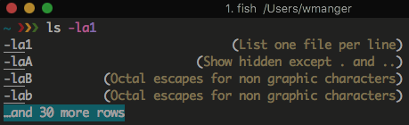

Adventures In Security Part 1
I have been getting increasingly interested in Security for the past year. I believe the moment that triggered the interest was when I was attending a Linux user group last year and the night’s subject was Cyber Security. The presenter had been in the field for a very long time and had done many things that were intriguing to me, so I slowly started to learn more about it. I settled on learning more about Penetration Testing, since I have most of my experience in creating web applications which in the past were… erm… not so secure.
At first I started with the brute force way of learning. I got into HackTheBox.eu with a little guessing (since you just can’t sign up for an account). From there, I tried to pop some boxes. I ended up popping… none. It was seriously disheartening, but then again, why did I expect to just jump in and immediately be able to exploit?
What I was exposed to in those first few hours were pretty valuable. I was following a professional pentester (IppSec) on YouTube get into retired HackTheBox machines and learning all of the places where I had knowledge gaps. One huge area I need to focus on is Networking. It’s pretty interesting how a programmer who has specialized in TCP/IP based applications could be as ignorant to the protocol as I think I am. But not for long.
I knew that I needed to get some sort of training, so I did from Udemy. I am currently enrolled in 5 courses, 2 of which are very network based (The Complete Wireshark Course and The Complete Nmap Ethical Hacking Course). These both look very well organized and get great ratings. The rest of the courses are pretty specific to pentesting. I started with one called Kali Linux Hands on Penetration Testing Labs which I am enjoying despite the minor flaw in one of the vulnhub VMs. I’ve learned a lot about configuring networks on virtual machines for safety.
Current Setup
Installed VirtualBox
I would have loved to install VMWare Fusion (since I am on a Mac), but I don’t have that kind of cash to slang around for exploration.
Installed Kali Linux
This is the distro that is packed with tons of awesome tools for pentesting.
Configured tmux to act more like Emacs (with Evil)
Basic movement and copy/pasting for better use of my time. From here, I opened a can of worms.
Installed the Fish shell so I could stop typing so many of the commands
This is my first experience with fish and I already love it, but I also already hit one of the pain points of it not being POSIX. I’ve read that there is a way to make it so, but I didn’t want to waste any more time. The best features of fish are autosuggest and the help that pops up when you list the suggestions. One could learn a lot from just hitting tab. I think I am going to be switching to fish as my full-time shell. That is, when I am not using Eshell.
Try the Fish Tutorial and you will see how magical it is. Spoiler alert: you type fish_config and a browser opens up where you have a GUI to configure your shell. So awesome.

Installed Emacs
I really tried not to install Emacs on Kali, but tmux, fish, etc, were not cutting it. I wanted to be able to sling text around in a buffer and work with it. The only solid way I know how to do this is in Emacs.
Unfortunately, you have to kind of hack Kali to let you install Emacs. It took me a while to get things right, and they are not completely where they need to be, but it sure is better using Emacs while performing pentests now.
Relevant Links:
Onward
I am looking forward to getting into more of the labs. At the moment, I really like the HackTheBox experience over downloading a VM locally to exploit it. Hopefully, I will get to pop my own box in the coming weeks with the knowledge that I gain from these courses. I plan on documenting my progress.